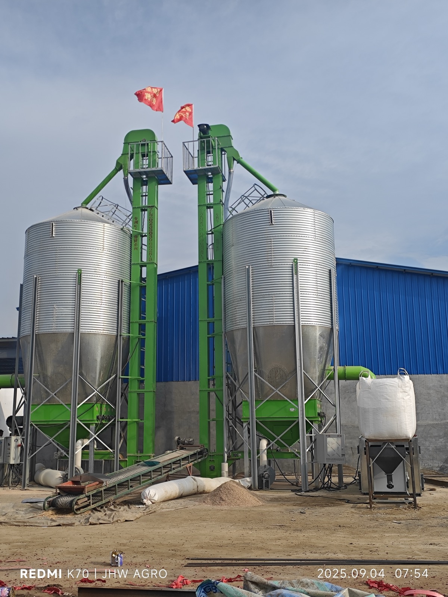
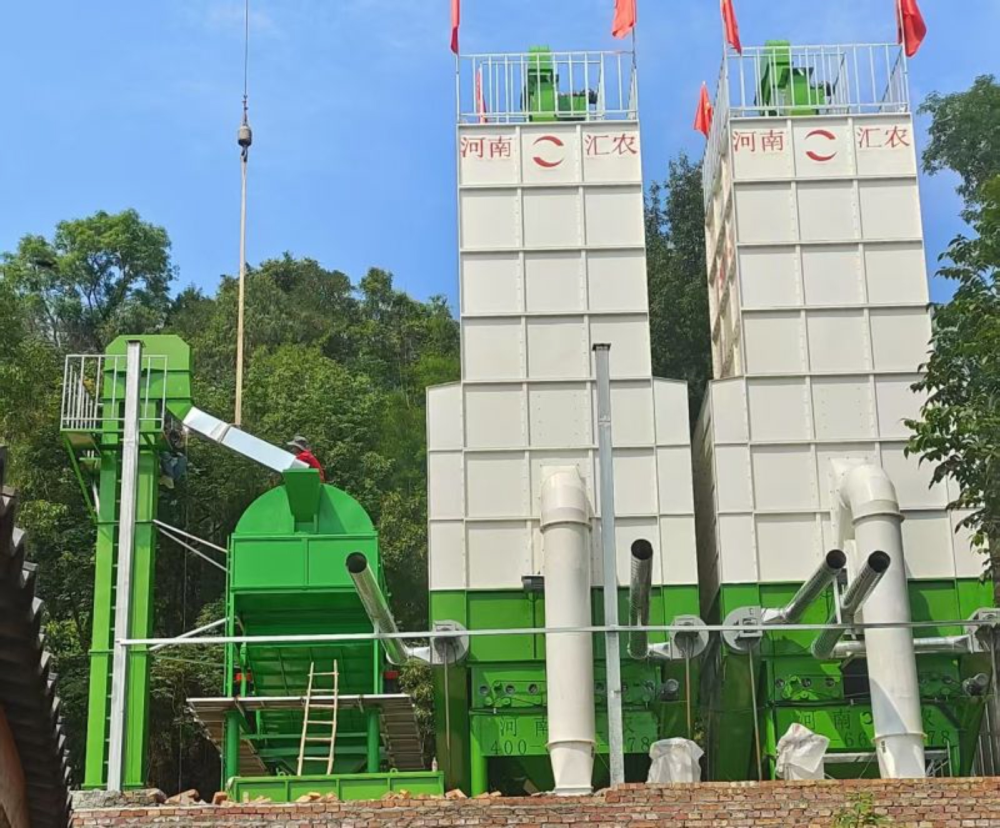
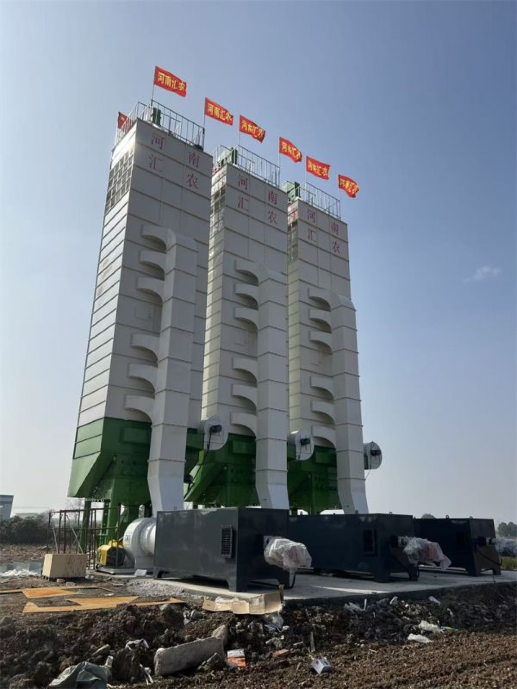
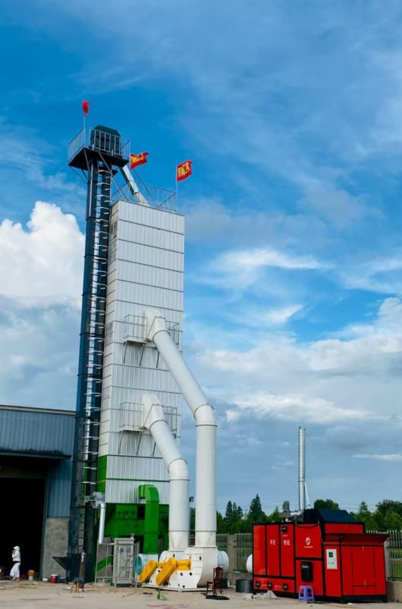

Grain Drying Equipment
for Every Operation
From mobile farm dryers to industrial continuous drying towers. Multi-fuel heating technology, 5–500 TPD capacity range.
Product Models
Product Lines
TPD Capacity
Fuel Options
Complete Grain Dryer Lineup
12 product models across 4 lines — from 5-ton mobile dryers to 500 MTPD industrial towers. Use the filters below to find your match.








Mobile Batch Grain Dryer
Portable design for multi-site operations. Equipped with foldable elevator and hopper, transport height under 4.5m, deploys in 30 minutes. Dual-power option (PTO + electric) available on G-MR-20.
Key Features
- Foldable elevator & hopper
- 30-minute deployment
- PTO dual-power (G-MR-20)
- Multi-grain compatibility
- 6 fuel options
- Grid or generator power
| Model | Capacity | Daily Output | Hopper Volume | Power | Dimension (L×W×H) |
|---|---|---|---|---|---|
| G-MR-5 | 5 T/batch | 10–20 T/day | 7.5 m³ | 3-Phase 50/60Hz | 5600 × 2500 × 5800 mm |
| G-MR-10 | 10 T/batch | 20–40 T/day | 16.4 m³ | 3-Phase 50/60Hz | 6100 × 3100 × 8400 mm |
| G-MR-20 | 20 T/batch | 70–80 T/day | 31.5 m³ | PTO 90HP / AC380V 49.2kW | 7300 × 3150 × 8450 mm |
Fixed Batch Grain Dryer
Fixed installation for medium-large farms or grain stations. More compact than mobile models, no chassis required. Bucket elevator ensures low grain breakage. G-SR-30/32 can double as long-term storage silo.
Key Features
- Bucket elevator, low breakage
- No chassis, compact structure
- Dual-use: dryer + storage
- 6 fuel options
- Precise moisture control
- Automatic temperature control
| Model | Capacity | Fuel Type | Power | Special Feature |
|---|---|---|---|---|
| 5T Batch | 5 T/batch | Diesel / LPG / Gas / Biomass / Wood / Coal | 3-Phase 50/60Hz | — |
| 10T Batch | 10 T/batch | Diesel / LPG / Gas / Biomass / Wood / Coal | 3-Phase 50/60Hz | — |
| G-SR-30 | 30 T/batch | Diesel / LPG / Gas / Biomass / Wood / Coal | 15.2 kW | Dual-use: dryer + storage silo |
| G-SR-32 | 32 T/batch | Diesel / LPG / Gas / Biomass / Wood / Coal | 19.4 kW | Dual-use: dryer + storage silo |
Continuous Drying Tower
Continuous drying for large grain depots and processing plants. 24/7 operation with automated feed and discharge. Indirect heating with heat exchanger ensures grain purity — no contamination from fuel.
Key Features
- 24/7 continuous operation
- Indirect heating, grain purity
- Automated feed & discharge
- 8–15% fuel savings
- Real-time monitoring
- Heat exchanger system
| Model | Capacity | Moisture Reduction | Drying Speed | Power | Fuel Saving |
|---|---|---|---|---|---|
| G-CT-120 | 120 MTPD | 14–16% | 8 hrs/cycle | 48 kW | 8–15% |
| G-CT-200 | 200 MTPD | 14–16% | 8 hrs/cycle | 102.7 kW | 8–15% |
| G-CT-300 | 300 MTPD | 14–16% | 8 hrs/cycle | 125.5 kW | 8–15% |
| G-CT-500 | 500 MTPD | 14–16% | 8 hrs/cycle | 211 kW | 8–15% |
Complete Grain System
One-stop grain handling solution from cleaning to storage. Customized configuration based on your farm scale and requirements. All components engineered to work together seamlessly.
System Components
- Pre-cleaner (impurity removal)
- Bucket elevator & conveyors
- Grain dryer (mobile/batch/tower)
- Steel silo / flat / cone silo
- Control panel & automation
- Complete engineering design
Product Comparison
Compare our product lines to find the right solution for your operation.
| Specification | Mobile Batch | Fixed Batch | Continuous Tower | Complete System |
|---|---|---|---|---|
| Models | G-MR-5/10/20 | 5T, 10T, G-SR-30/32 | G-CT-120/200/300/500 | Custom |
| Capacity | 5–20 T/batch | 5–32 T/batch | 120–500 MTPD | Custom |
| Daily Output | 10–80 TPD | 5–32 TPD | 120–500 TPD | Custom |
| Fuel Options | 6 | 6 | 3 (Coal/Biomass/Wood) | Custom |
| Heating | Direct or indirect | Direct or indirect | Indirect + heat exchanger | Custom |
| Mobility | Yes (foldable) | No | No | No |
| Storage Dual-use | No | Yes (G-SR-30/32) | No | Yes |
| Automation | Basic | Medium | Advanced | Advanced |
| Best For | Multi-site farms | Grain stations | Large processors | New facilities |